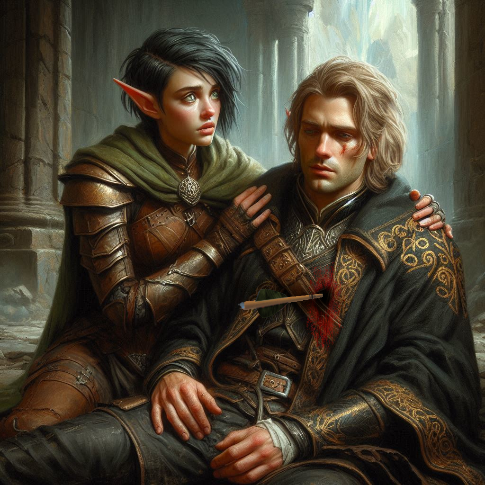
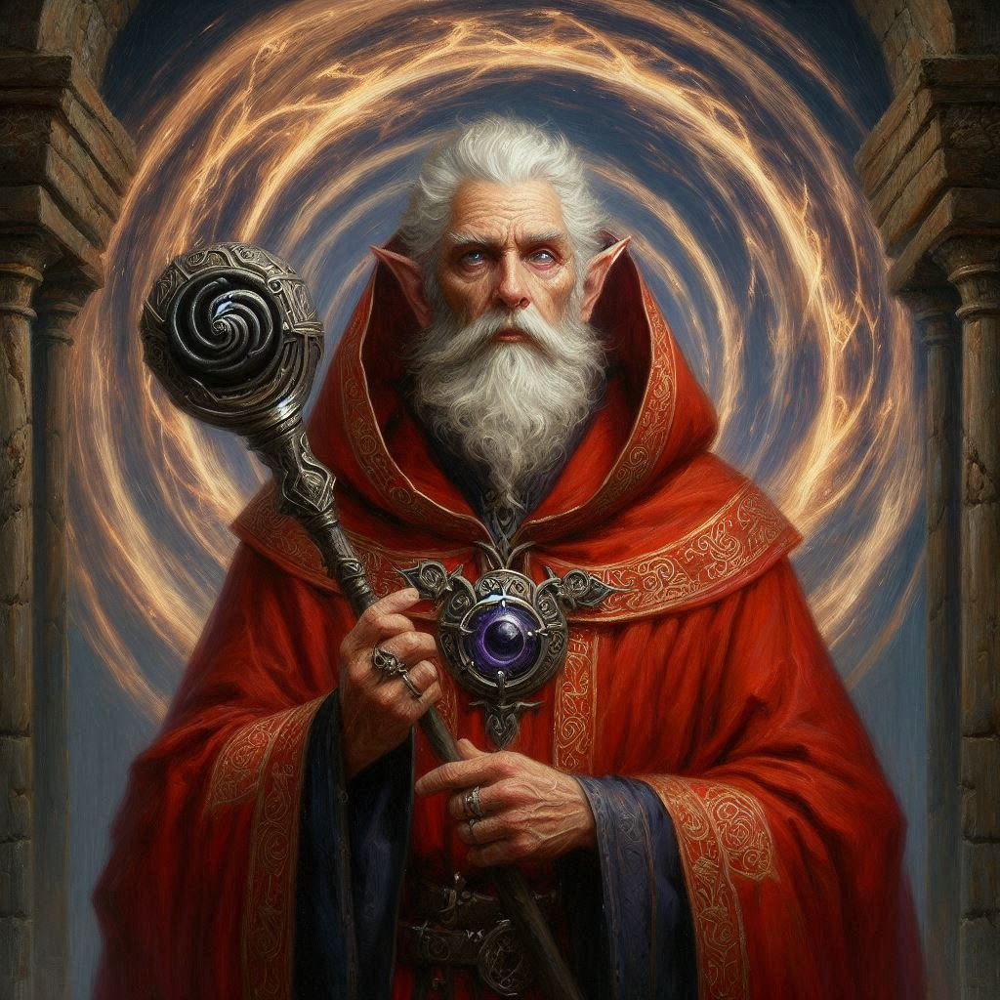
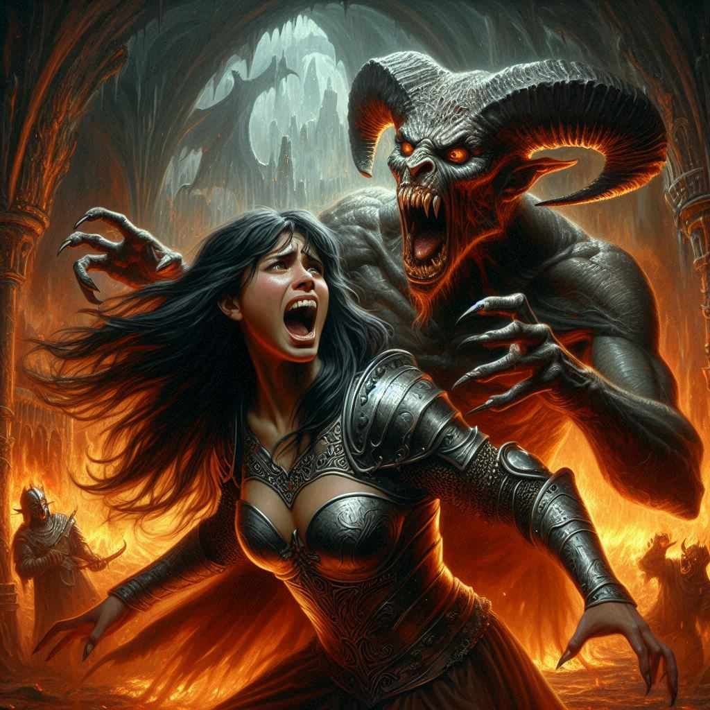

The Cost of Duty
The weight of the moment presses down on you as you find yourself facing Jorsh, his figure illuminated in the dim, flickering light of the cavern’s torches. Shadows dance along the stone walls, twisting into otherworldly shapes, their silent movement underscoring the urgency of your decision. Jorsh stands before a stone altar, his hands tracing symbols in the air—symbols of magic you once knew him incapable of understanding, let alone wielding.
“I can end this,” he says, his voice barely more than a whisper. He raises his gaze to meet yours, a gleam of desperation, even madness, in his eyes. “I can stop Varis and the threat to Yew, if you just… let me.”
But you know, as deeply as you know your own heartbeat, that he’s changed too much. The once kind boy from Belladonna is gone, replaced by a man consumed by vengeance and darkness. You remember the Magistrate’s words, echoing in your mind, his order that Jorsh must be brought in or killed. You reach for the arrow, drawing it from your quiver with an aching sense of finality.
“Jorsh…” You try to steady your voice, but your words catch. The anger and betrayal in his eyes cut deeper than any blade. He was once your friend, your love, but now he stands in your path, a threat to the very kingdom you’ve sworn to protect.
He steps back, perhaps sensing the steely resolve in your expression. “You wouldn’t do this, Kira. You can’t.” His voice wavers, uncertainty creeping into his words.
Your hand trembles, but you force your bowstring taut, the arrow’s point aimed at his heart. “I have to, Jorsh,” you reply, your voice laced with sorrow. “You chose this path, and now I’m choosing mine.”
Without giving him another chance to speak, you release the arrow. It cuts through the air, finding its mark with a sharp thud. Jorsh staggers, his hand reaching toward the wound, shock written across his face as he stares at you, disbelieving.
“You… really did it,” he murmurs, sinking to his knees.
You rush to his side and steady his fall as he slumps to the ground. “I’m sorry, Jorsh. I’m sorry it had to end like this.” You feel the emotion surging upward from your chest, constricting your throat.
“I- I should have known,” Jorsh wheezes. “You were always so good. So.. stubbornly… good.”
“I loved you, but you left me,” you cry angrily. “You left me!”
“I had to save Belladonna. I had… to save… you…” Jorsh gasps. “I… was the only one… strong enough to stop… Varis. You need to run… flee now… before it’s too late!”
Before you can process the gravity of your choice, you hear a shuffling of feet and the familiar cadence of marching. Shadows loom at the entrance to the chamber, and you realize it’s too late—the Minister of Trade, Varis, has arrived with his mercenaries.
Elias and Princess Hawthorn are by your side in an instant, drawing their weapons, but the odds are overwhelming. Varis stands tall, dark eyes gleaming with cruel amusement as he surveys the scene.
“You thought you could stop me?” he sneers, his voice a cold caress that chills you to the bone. “I am more than your petty kingdom could ever understand. I will summon Yaldaboath himself and bring down Yew.”
Hawthorn raises her voice, defiance simmering in her gaze. “You’ll be stopped, Varis. The royal guards will be here soon.”
Varis chuckles, shaking his head slowly. “Ah, Princess, didn’t you know? Your royal guards are in my pocket. They won’t be coming.”
Before you can react, Varis gestures, and his mercenaries surge forward, their weapons drawn. You, Elias, and Hawthorn are overwhelmed, your movements slowed, your blades meeting only a few mercenaries before you’re subdued.
Varis moves to the portal where Jorsh was standing. He flicks his wrist, and Jorsh’s body slides away like a crumpled heap of refuse discarded without thought. Varis raises a staff with a black crystal and waves it in front of the ancient portal. A mystical vortex swirls into being and Varis steps through into the Realm of Shadows.
The dark elves standing nearby grab you roughly and usher you into the portal behind Varis. Bound and weakened, you’re forced along the shadowy paths of the cavern until you reach a temple carved from the bones of the earth, sinister and ancient.
“Where is the dwarf cleric?” Varis asks one of his generals.
“Master, we were unable to find him,” the dark elf replies.
“No matter,” Varis snarls. “We will use these three instead.” Varis gestures toward you, Elias, and Hawthorn.
You wonder who the dwarf cleric is that Varis spoke of. You wonder what Varis means by using you instead. In the center of the chamber, you see the altar, rough and scarred, waiting for sacrifice. Varis’s dark elves surround it, their hollow eyes watching you with an unsettling calm. You’re forced down onto the cold stone, arms and legs bound, with Elias and Hawthorn to either side.
The smell of blood and ash fills your nostrils, sharp and consuming, as Varis raises his hands, beginning his chant in a language older than the kingdom itself. You struggle against your bindings, but they hold fast, the rough rope biting into your skin.
A ripple of energy crackles through the air, making the hair on your arms rise as Varis’s chanting grows louder, calling for something far more terrible than anything you’ve faced. Then, from the shadows, you sense a shift—a presence, a dark and malignant force stirring beyond the veil of reality.
Yaldaboath.
The demon-god begins to materialize, an unholy fusion of scales, smoke, and shadow, eyes like molten fire boring into your soul. Varis continues to chant, his voice thick with fervor, and Yaldaboath’s gaze shifts, settling on the three of you. Its hunger is palpable, a force of terror so strong you feel your heart falter.
Elias, to your left, is silent, his expression grim but resolved, his eyes flickering over to meet yours. For a fleeting moment, his feelings for you seem to break through the darkness, as if his love is something he wants you to hold onto in these final breaths.
Hawthorn, defiant as ever, strains against her bindings, her jaw clenched as she glares at Varis with an intensity that could shatter stone.
But none of it matters. With a single gesture, Varis releases the binding spell holding Yaldaboath at bay, and the demon surges forward. The world around you becomes a vortex of fire and shadow, Elias and Hawthorn consumed in moments by the creature’s insatiable hunger. Their cries pierce the chaos, and you know that you are next.
As Yaldaboath turns to you, you close your eyes, clutching a final image of Elias and Hawthorn, of Baider, of Belladonna, hoping that somehow, this sacrifice will not be in vain. Darkness closes around you, and your last thought is of the kingdom you gave everything to protect.